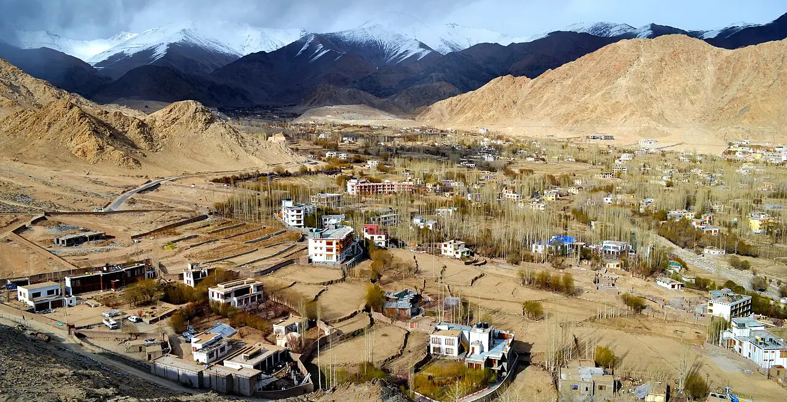

Ladakh protests
 File photo · 2007
File photo · 2007i

In pictures
 File photo · 2018
File photo · 2018i

 File photo · 2015
File photo · 2015i
.jpg){kind=link}

File photo · 2015i
Every update
- November 2026
Leh police lift guard at Wangchuk's home
AssemblyLeh police on 20 Nov withdrew personnel enforcing a prohibitory order on activist Sonam Wangchuk, who said 20–25 armed personnel had confined him since 11 Nov. Police say he was never under house arrest.
Deccan Herald (PTI) · Edition of Sat 21 NovLeh activists hold 24-hour hunger strike
AssemblyAbout 40 Leh Apex Body activists fasted 24 hours on 14 Nov, seeking the report on the September 2025 police firing and deferral of 4 Dec council polls. The Centre reportedly offered talks 5–10 Dec.
The News Now · The Tribune · Edition of Sun 15 NovOrder bars Wangchuk from rallies for 60 days
AssemblyA 60-day order under Section 163 bars Sonam Wangchuk from rallies in Leh during the council elections. He calls it house arrest and plans a court challenge; police say he was advised to stay home.
Deccan Chronicle · The Tribune · Edition of Sat 14 NovWangchuk says he is under house arrest
AssemblyActivist Sonam Wangchuk says about 20 armed personnel keep him home in Leh after he opposed holding council polls on 4 December. Police said he was advised to stay home under election prohibitory orders.
The Wire · ETV Bharat · Edition of Fri 13 Nov